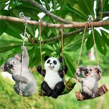

Welcome to My Website all about Animals!
There are so many different kinds of animals out there! We are still discovering many new speciest all the time. Of all the animals out there though, the koala is definitely the dumbest. Did you know that even if you hand eucalyptus leaves on a plate to a koala they won't eat it simply because their brains can't comprehend it. They also have incredibly smooth brains also indicating how dumb they are! Good things humans are smarter than koalas
Top 3 Dumbest Animals
- Koalas
- Sloths
-
Pandas
- At least pandas are cute and friendly
- I want to get a panda tattoo one day
- Kung Fu Panda is also such a great movie
Sloths may be the all time laziest animals! They mostly sleep all day and hardly move! Sometimes I feel like a sloth. Its hard waking up everyday and having to move. Honestly, maybe being a sloth wouldn't be so bad. Let's be real, they're probably way happier than we are. That's the issue with human existence. Knowing our own mortality yet, still constantly wasting away, a slave to our screens.
| Animals | Koalas | Sloths | Pandas |
| Rating | 1.3 | 3.5 | 4.7 |

why sloths are slow
Pandas really got it made. they just live their life and don't cause problems. Nothing about a panda's face makes you want to punch them. On the other hand, koalas just seem so smug. They're quite honestly asking for it! I wish there was something we could do to improve koalas but at this point it honestly seems hopeless. They were a mistake and shouldn't be seen as such cute and cuddly creatures. They're a menace to society.
#koalassuck
#PANDASROCK
Level of Cuteness Out of 5